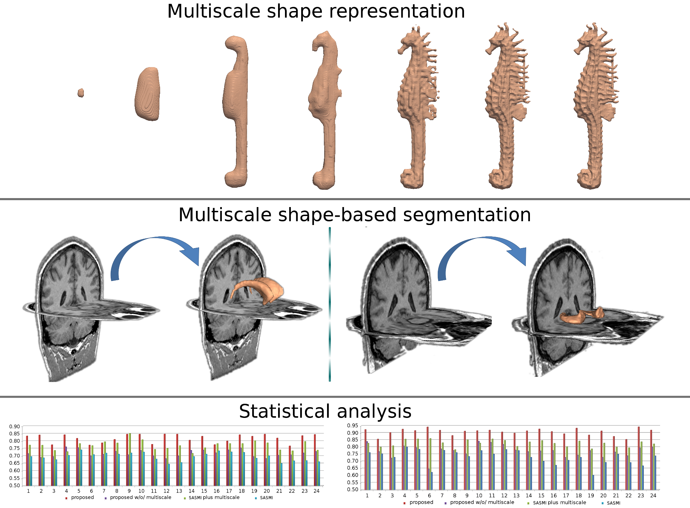
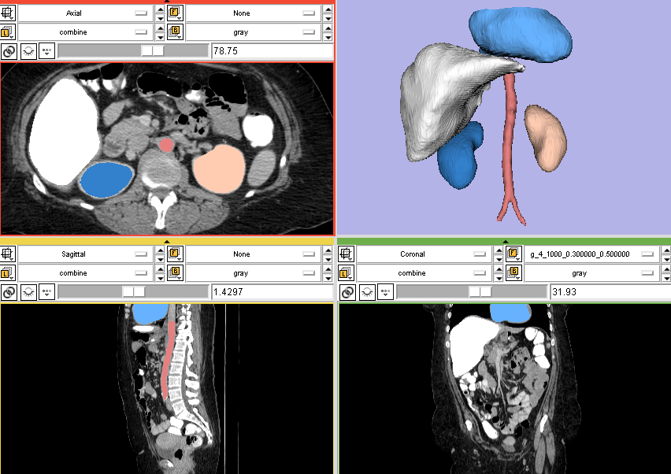
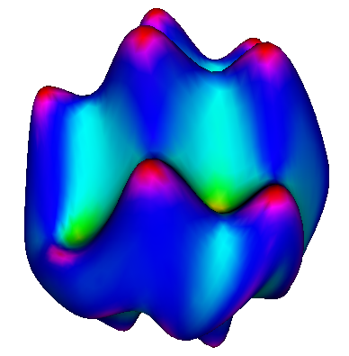
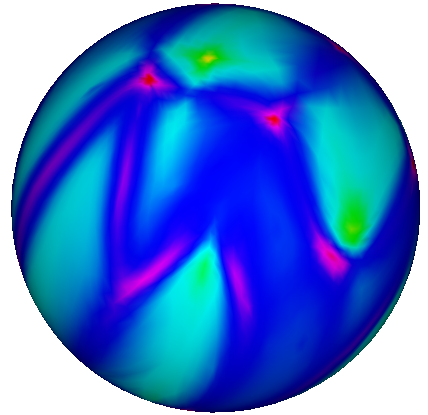
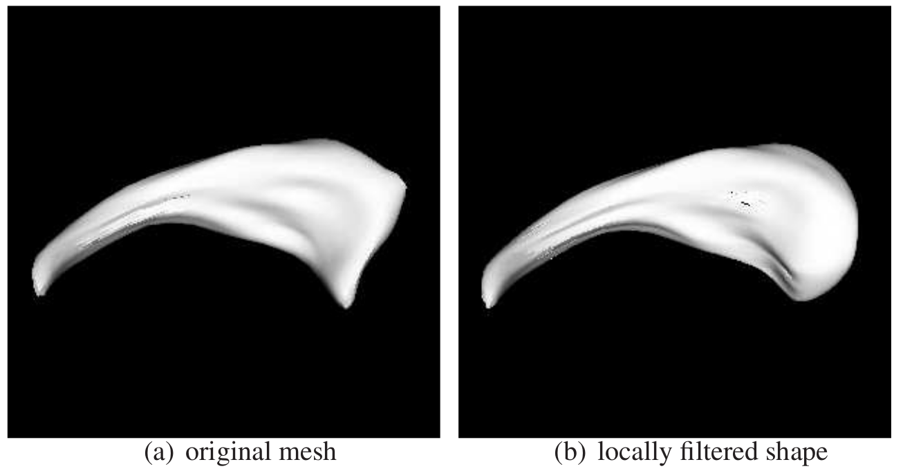

Multi-scale shape representation & 3D wavelet transformation
In our project:
``Y. Gao, B. Corn, D. Schifter, and A. Tannenbaum, Multiscale 3D shape representation and segmentation with applications to hippocampal/caudate extraction from brain MRI, Medical Image Analysis, vol. 16, no. 2, pp. 374-385, 2012''
we proposed a multi-scale shape decomosition and reconstruction for 3D shapes of arbitrary topology. As a bi-product, we release the code for performing 2D and 3D wavelet transformation on ITK images. The source code is hosted on github at here.
Robust Statistics Segmenter, an interactive 3D segmentation software
Tracing out the target in a 3-Dimensional volume data is time consuming. This algorithm/software is an end-user oriented, interactive 3D image segmentation tool. It is fully integrated in the 3D Slicer software. To use it, the user will simply provide a few strokes in the desired region and this algorithm/software then takes over and performs the full 3D segmentation.
TODO: I'll add code here soon.
Conformal map a VTK surface to a sphere
 Given a genus-0 surface, that is, a closed surface with no holes and no handles, this filter maps the surface to a sphere. The angle will be preserved during the mapping. It's based on the paper On the Laplace-Beltrami operator and brain surface flattening by Angenent, Haker, Tannenbaum and Kikinis, published on IEEE TMI. The implementation is now shipped with the InsightToolkit. The implementation and the usage is detailed in the Conformal Flattening ITK Filter published in the Insight Journal/MICCAI 2006 Open Science Workshop. For example, the surface below on the left will be mapped to the sphere on the right.
TODO: I'll add code here soon.
Wavelet transform on sphere
- How to do wavelet analysis on a 2-sphere?
- How that can be applied to localized analysis of a shape?